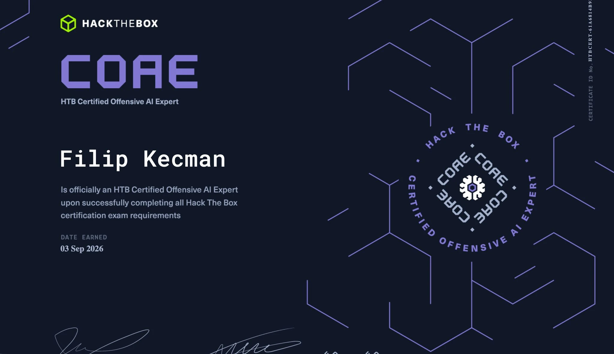
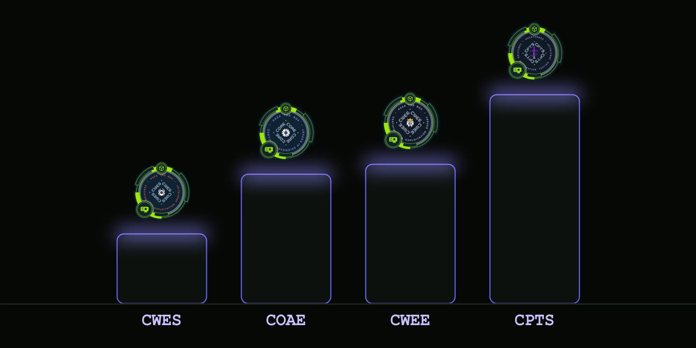

My Certified Offensive AI Expert (COAE) from Hack The Box is done. I passed it back in September, and between finishing it and finding time to sit down and write about it, it's now November. I still want to put this one in writing while enough of it is fresh, both for anyone deciding whether to sit it and for my own record, since I'm planning a small series comparing the Hack The Box certifications I hold.

As with every commercial exam, I'm not allowed to say anything about its actual content, and I won't. What I can share is what the training teaches, what you should already know going in, and honestly, how hard I found it compared to the other Hack The Box certifications on my shelf.
I already had a fair amount of experience testing AI through my career before I booked this one, so I went in less as a beginner and more to formalise and validate what I already knew. Keep that in mind as you read the rest of this, since it shapes how I experienced the exam.
The Training
Offensive AI testing, meaning how you probe AI systems and the applications built around them for weaknesses, is a newer discipline inside penetration testing. Hack The Box built a full training path for it on HTB Academy before putting the COAE exam behind it, the same approach they took with the Certified Web Exploitation Specialist (CWES) and the Certified Web Exploitation Expert (CWEE).
To be honest, the materials genuinely cover everything you need. I went through the whole path and didn't have to go looking for outside resources to feel ready, which isn't something I can say about every certification I've prepared for. Go through it properly, module by module, instead of skimming for the exam, and you'll walk in with what you need.
What you should already have before you start is a solid base in how web applications work and how to test them, since a lot of offensive AI testing is really web application testing with an AI layer sitting on top of it. Beyond that, the training builds the rest from the ground up, so you don't need to arrive as an AI specialist.
There were a few examples on the exam itself that genuinely stuck with me. I won't go into what they were, but they're a good sign of how realistic the scenarios are built, and they made the whole thing a genuinely interesting test to sit, not just a box to tick.
How It Compares
This is the part people actually ask me about anyway: how hard is it?
If I compare it against the other Hack The Box certifications I hold, I'd place COAE somewhere between CWES and CWEE in difficulty. It leans closer to CWEE than to CWES, but it's a clear step down from the Certified Penetration Testing Specialist (CPTS). CPTS is still the hardest certification I've done, by some distance, and that one deserves its own post, which is coming.
Honestly, for me personally, the COAE exam itself wasn't particularly hard. I came into it after years of web application testing experience, which carried over directly. If you're earlier in your career, give yourself more runway than I needed, the comparison above is relative to where I was standing, not an absolute scale.

Why Testing AI Is Interesting
Testing AI is a genuinely interesting part of this job, and not for the reasons people usually assume. An AI model is, in a lot of ways, a simulation of a human. It reasons in language, it can be persuaded, it can be led, and it reacts to context the way a person does. The human is the weakest link in any chain, every pentester learns that early, and now that same weakness is being built into software and shipped at scale.
AI is used everywhere now, in almost every product and workflow I come across. In my opinion that only increases the attack surface across the board, it doesn't shrink it. I also don't think AI reduces the amount of workforce needed. It changes what the work looks like and how it gets done, the same as every real innovation before it. The job doesn't disappear, it moves.
Final Thoughts
I wouldn't call COAE advanced, that's just my opinion. I'd place it as a good starting point for someone who wants to get into AI security, rather than a certification for someone already deep in the field. If you're a web application tester or an AppSec engineer curious about this direction, this is a reasonable place to start, and the training is built properly enough to actually get you there. That's it.
This is one of a few Hack The Box certifications I'll be writing about. CPTS is next, and that one I'm genuinely looking forward to putting into words.
Thanks for reading. If this was useful, there is more on the blog, and more coming.
I'm Filip Kecman, a penetration tester and security researcher. I write about what I test with my own hands and about what I learn along the way.
If you want to talk about any of this, connect with me on LinkedIn. If you have an idea for a collaboration, or you need a penetration test, reach out through kecman.co.